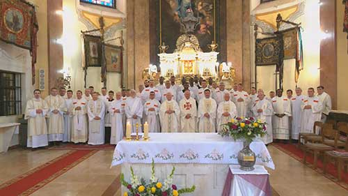
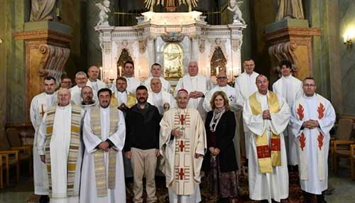
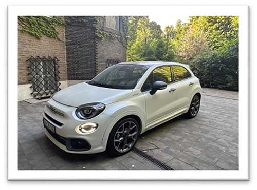

Feltöltési jelentés:
3 Toronyirány_2026-03_p24_01.indd
Feltöltve: 2026 May 11., 16:26
Hiányzó képek:
DSC_9378_püspökcivilben.tif
341-022-IMG vil_woshadow.psd
Kis felbontású, de még használható képek:
gem-2492-gs.jpg ::: 229 dpi
710848213_1597781562120161_4517892120364585272_n.jpg ::: 257 dpi
csoportkep.jpg ::: 251 dpi

Kis felbontású, használhatatlan képek:
mariaradna.jpg ::: 186 dpi

auto1.jpg ::: 134 dpi
